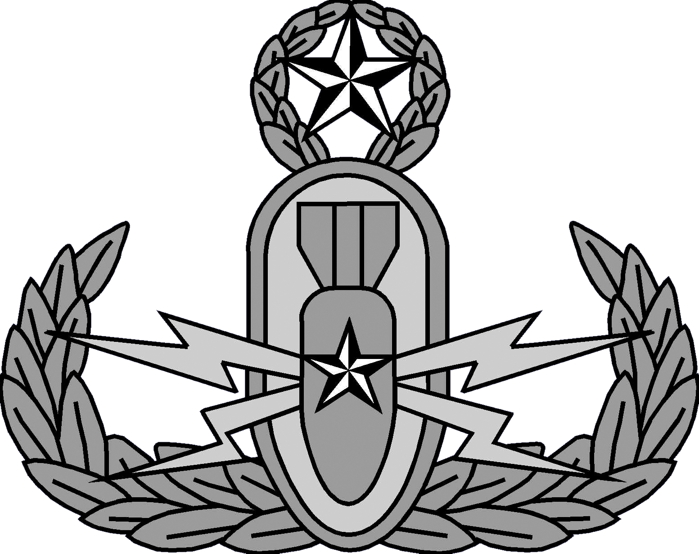

Explosive Ordnance Disposal (EOD) Technicians have expertise in the most conventional and unconventional explosives to ensure the secure disposal of explosive weaponry. They are on call to respond to any type of ordnance, and they receive specialized training to handle chemical, biological and nuclear weapons. They investigate and demolish natural and man-made underwater obstructions, prepare coastal regions for amphibious landings, and warn about potential threats at home and abroad.Whether getting the job done in a bomb suit or by utilizing state-of-the-art robotic technology, Navy EODs are trained to use the most advanced tools of their kind in a role that’s vital to the safety of servicemembers and civilians.